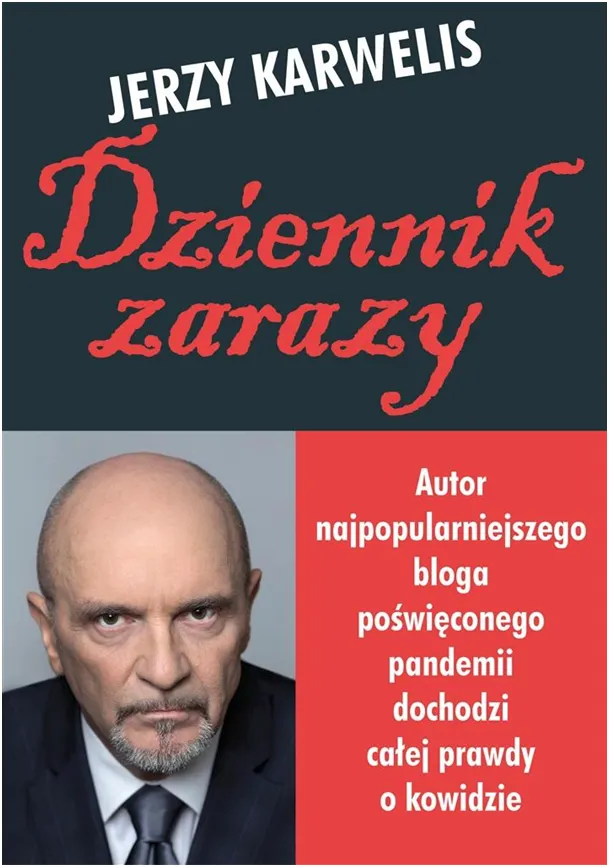
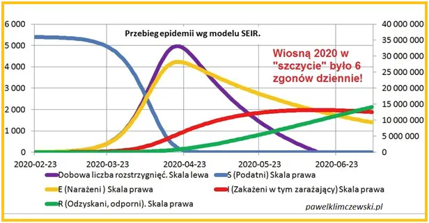

Wieczór autorski Jerzego Karwelisa, autora bloga i nowej książki “Dziennik zarazy”. Widzimy się w środę wieczorem, 12 lipca Warszawa.
Jerzego Karwelisa poznałem, gdy pracował w prasie. Był mózgiem w jednym z największych wydawnictw, szczególnie opiekował się pismami komputerowymi, ale znałem go z Izby Wydawców Prasy (IWP), samorządu gospodarczego rynku prasowego. W tym czasie byłem odpowiedzialny za jakość pomiaru, wielkiego badania czytelnictwa 200 najważniejszych periodyków. Internet już robił karierę, ale papier to była potęga.

Z badania wynikała cena reklam w poszczególnych tytułach. Było w tym dużo matematyki i oczywiście specjalny program komputerowy. Jako szef Zespołu Metodologicznego pracowałem z czołówką socjologów i statystyków z uniwersytetu. Projekt kosztował grube miliony, bo służył do racjonalnego podziału setek milionów z rynku reklamy na poszczególne 200 tytułów prasowych. Nie było wiele osób, które ogarniałoby to wszytko, ale Jerzy ogarniał. Nie wchodził w szczegóły, bo od pisania kodu i pilnowania sieci ankieterów byli tacy ludzie jak ja, ale zadawał krótkie, dobre pytania na temat. Ja byłem specem od dzienników a Jerzy wtedy wprowadzał na rynek Fakt i przeorał mi rynek w poprzek. Poznałem wtedy wagę gracza. Wszytko ma swój koniec i nasze drogi się rozeszły.

Minęło wiele lat, wiosną 2020 roku do Polski nadciągał "zabójczy wirus". Postanowiliśmy w domu zrobić zapasy większe, niż zwykle. Ile kupić tego makaronu? Ile puszek fasoli? Czy mrożonki wchodzą w grę? 20 lat wcześniej pisałem algorytmy do przewidywania szybkości rozwoju epidemii. Było to potrzebne do szacowania skuteczności "wirusowych" kampanii reklamowych. Miałem wszytko, co trzeba na dysku, w tym podręczniki medyczne z epidemiologii, bo model marketingowy w 100% naśladuje prawdziwe epidemie.
Były w marcu już dane z Wielkiej Brytanii za styczeń, łącznie ze zgonami. Okazało się, że wiosna 2020 to bardzo niski poziom zgonów w Europie , głownie z powodu lekkiej zimy. Predykcja była też bardzo optymistyczna. Opisałem to na FB, szybko przybywało tysiące folowersów. Szybko zadzwonił też Jerzy Karwelis i mówi, że pisze taki blog "Dziennik zarazy" i chce zrobić wywiad. Rano zobaczyłem w "Do Rzeczy", "Wywiad z wampirem", czyli ze mną https://dorzeczy.pl/kraj/142036/wywiad-z-wampirem.html
Potem szybko była książka, pierwszy tom "Fałszywej Pandemii". Poza mną w Polsce nikt nie chciał nic tam opublikować. Wydał to Grzegorz Braun, Czesław Niemen zaśpiewał "Dziwny jest ten świat". W "wRealu24" wykręciłem kiedyś 1/2 mln odsłon i wtedy zablokowali mi prywatne konto pocztowe. Mamy to za sobą, ale nie całkiem i piszemy dalej. Liczę na Jerzego, że weźmie swój wieniec chwały i wejdzie na wysoką trybunę.
Teraz Jerzy z bloga wydał książkę. Jestem pewien, że jak znajdą to archeolodzy za 10 000 lat to będą czytać po nocach.
W imieniu Jerzego, zapraszam na Jego wieczór autorski. Będziemy mogli porozmawiać o książce, autorze, czasach, ale i o Was, którzy przeżyliście, często wraz ze mną, ten ciężki czas. Będą znakomici goście.
Bedzie to dla mnie okazja, aby spotkać wielu tych, którzy byli na Zjeździe Koronarealistów, na którym nie mogłem być. Gdy Jerzy mi mówiło o tym zjeździe pomyślałem, że odkrył w sobie monarchistę-realistę. To by dopiero było! Chodziło jednak o wirusa w koronie, to już coś. Wirusowi zawdzięczamy wielu nowych przyjaciół, którzy na naszych oczach zdali celująco największy w historii świata test na inteligencję.
Wieczorek poprowadzi Piotr Szlachtowicz, redaktor naczelny telewizji wRealu 24.
Miejsce: Dom Kultury, na tyłach teatru Komedia, przy ul. Słowackiego 19a w Warszawie
Czas: środa 12 lipca 2023 roku, początek o godz. 19.00
To 10 minut spacerkiem od stacji metra „pl. Wilsona”. Wstęp wolny.
Wybrane teksty z „Dziennik zarazy” będzie czytał Rafał Zawierucha. Więcej szczegółów tu https://dziennikzarazy.pl/zaproszenie-na-wieczorek-autorski/
Paweł Klimczewski
Polecam mój ważny raport https://pawelklimczewski.pl/2022/02/09/nie-bylo-fali-pierwszej-nie-bylo-drugiej-nie-bylo-zadnej-fali/
oraz